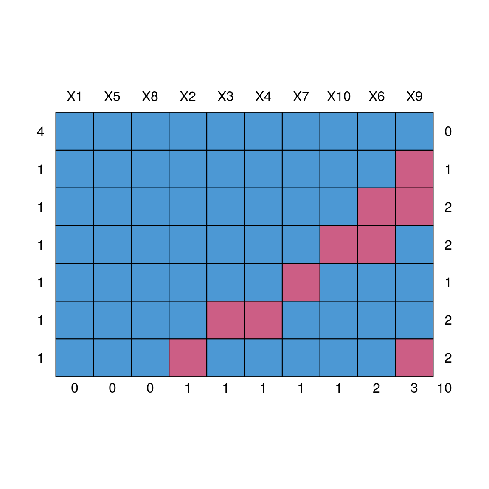
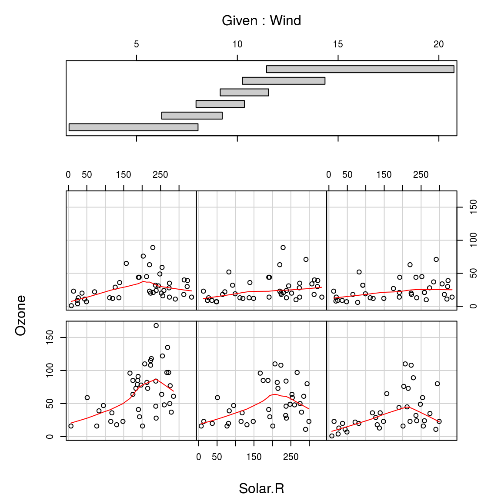
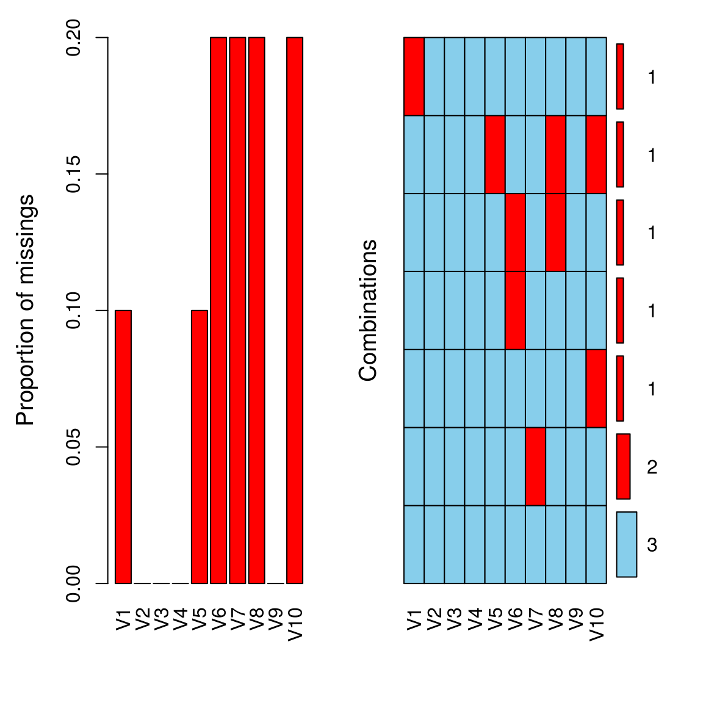
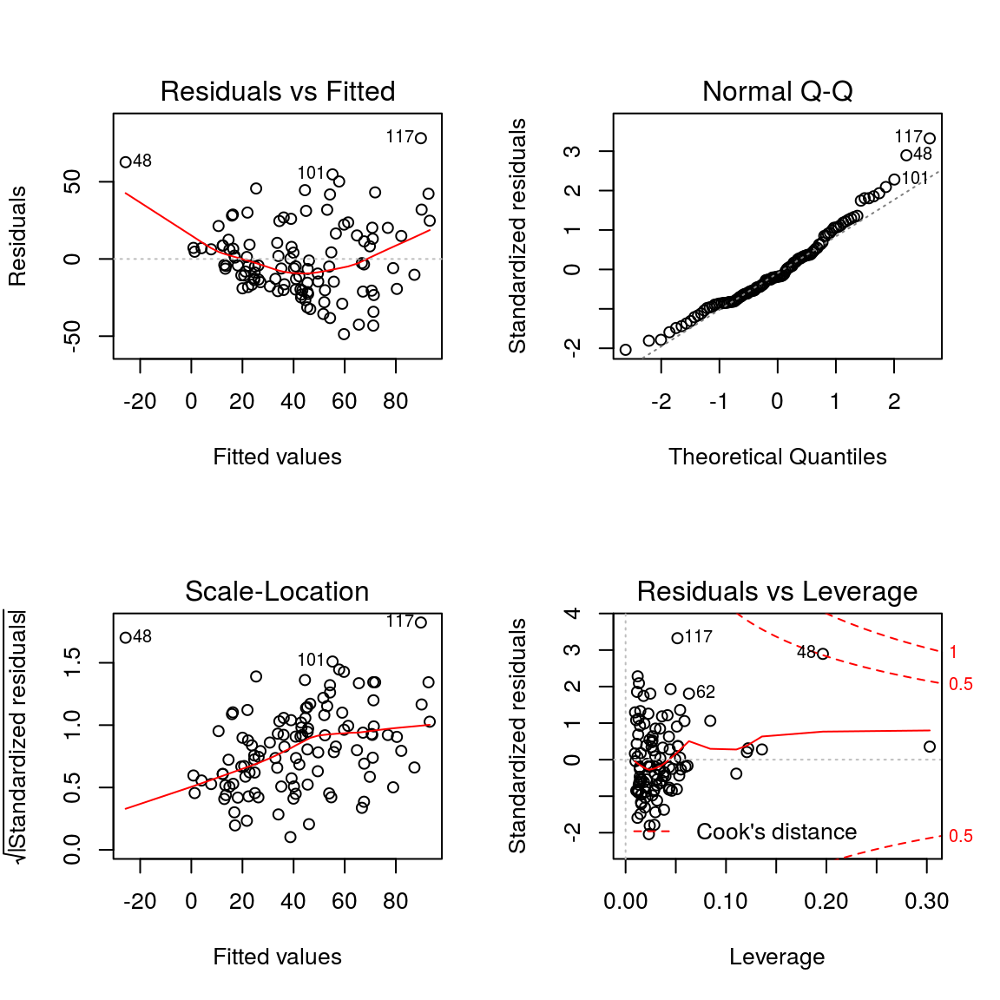

11 Working with missing values
11.1
## Some sample data
set.seed(0)
dat <- matrix(1:100, 10, 10)
dat[sample(1:100, 10)] <- NA
dat <- data.frame(dat)11.2 Summaryize the missing values
11.2.1 Summarize the missing values using mice package
The mice package provides a nice function md.pattern() to get a better understanding of the pattern of missing data.
#install.packages("mice")
library(mice)##
## Attaching package: 'mice'## The following objects are masked from 'package:base':
##
## cbind, rbindmd.pattern(dat)
## X1 X5 X8 X2 X3 X4 X7 X10 X6 X9
## 4 1 1 1 1 1 1 1 1 1 1 0
## 1 1 1 1 1 1 1 1 1 1 0 1
## 1 1 1 1 1 1 1 1 1 0 0 2
## 1 1 1 1 1 1 1 1 0 0 1 2
## 1 1 1 1 1 1 1 0 1 1 1 1
## 1 1 1 1 1 0 0 1 1 1 1 2
## 1 1 1 1 0 1 1 1 1 1 0 2
## 0 0 0 1 1 1 1 1 2 3 1011.2.2 Summarize the missing values using VIM packages
#install.packages("VIM")
library(VIM)## Loading required package: colorspace## Loading required package: grid## Loading required package: data.table##
## Attaching package: 'data.table'## The following objects are masked from 'package:dplyr':
##
## between, first, last## The following objects are masked from 'package:xts':
##
## first, last## VIM is ready to use.
## Since version 4.0.0 the GUI is in its own package VIMGUI.
##
## Please use the package to use the new (and old) GUI.## Suggestions and bug-reports can be submitted at: https://github.com/alexkowa/VIM/issues##
## Attaching package: 'VIM'## The following object is masked from 'package:datasets':
##
## sleepaggr(dat, numbers = TRUE, prop = c(TRUE, FALSE))
aggr(t(dat), numbers = TRUE, prop = c(TRUE, FALSE))
aggr_plot <- aggr(dat, col=c('navyblue','red'), numbers=TRUE, sortVars=TRUE, labels=names(dat), cex.axis=.7, gap=3, ylab=c("Histogram of missing data","Pattern"))
##
## Variables sorted by number of missings:
## Variable Count
## X9 0.3
## X6 0.2
## X2 0.1
## X3 0.1
## X4 0.1
## X7 0.1
## X10 0.1
## X1 0.0
## X5 0.0
## X8 0.0tdat = t(dat)
aggr_plot <- aggr(tdat, col=c('navyblue','red'), numbers=TRUE, sortVars=TRUE, labels=names(tdat), cex.axis=.7, gap=3, ylab=c("Histogram of missing data","Pattern"))
##
## Variables sorted by number of missings:
## Variable Count
## V6 0.2
## V7 0.2
## V8 0.2
## V10 0.2
## V1 0.1
## V5 0.1
## V2 0.0
## V3 0.0
## V4 0.0
## V9 0.011.3 Delete columns/rows with more that x% missing
## Remove columns with more than 50% NA
dat_file = dat[, -which(colMeans(is.na(dat)) > 0.5)]11.4 Imputing the data
11.4.1 Imputing the data with row-wise mean
dat.imp = dat
k <- which(is.na(dat.imp), arr.ind=TRUE)
dat.imp[k] <- rowMeans(dat.imp, na.rm=TRUE)[k[,1]]11.4.2 Imputing the data with row-wise mean using mice
tempDat <- mice(as.matrix(dat), method = "mean")##
## iter imp variable
## 1 1
## 1 2
## 1 3
## 1 4
## 1 5
## 2 1
## 2 2
## 2 3
## 2 4
## 2 5
## 3 1
## 3 2
## 3 3
## 3 4
## 3 5
## 4 1
## 4 2
## 4 3
## 4 4
## 4 5
## 5 1
## 5 2
## 5 3
## 5 4
## 5 5## Warning: Number of logged events: 9summary(tempDat)## Class: mids
## Number of multiple imputations: 5
## Imputation methods:
## X1 X2 X3 X4 X5 X6 X7 X8 X9 X10
## "" "" "" "" "" "" "" "" "" ""
## PredictorMatrix:
## X1 X2 X3 X4 X5 X6 X7 X8 X9 X10
## X1 0 0 0 0 0 0 0 0 0 0
## X2 0 0 0 0 0 0 0 0 0 0
## X3 0 0 0 0 0 0 0 0 0 0
## X4 0 0 0 0 0 0 0 0 0 0
## X5 1 0 0 0 0 0 0 0 0 0
## X6 0 0 0 0 0 0 0 0 0 0
## Number of logged events: 9
## it im dep meth out
## 1 0 0 collinear X5
## 2 0 0 collinear X8
## 3 0 0 collinear X2
## 4 0 0 collinear X3
## 5 0 0 collinear X4
## 6 0 0 collinear X7impDat<- complete(tempDat)
impDat## X1 X2 X3 X4 X5 X6 X7 X8 X9 X10
## 1 1 11 21 31 41 51 NA 71 81 91
## 2 2 12 22 32 42 52 62 72 82 92
## 3 3 13 23 33 43 53 63 73 83 93
## 4 4 14 24 34 44 54 64 74 84 94
## 5 5 15 25 35 45 55 65 75 NA 95
## 6 6 16 26 36 46 NA 66 76 86 NA
## 7 7 17 NA NA 47 57 67 77 87 97
## 8 8 18 28 38 48 NA 68 78 NA 98
## 9 9 19 29 39 49 59 69 79 89 99
## 10 10 NA 30 40 50 60 70 80 NA 10011.5 Reference
Imputing Missing Data with R; MICE package: https://datascienceplus.com/imputing-missing-data-with-r-mice-package/
Delete columns/rows with more that x% missing : https://stackoverflow.com/questions/31848156/delete-columns-rows-with-more-that-x-missing
- Tutorial on 5 Powerful R Packages used for imputing missing values
- https://www.analyticsvidhya.com/blog/2016/03/tutorial-powerful-packages-imputing-missing-values/